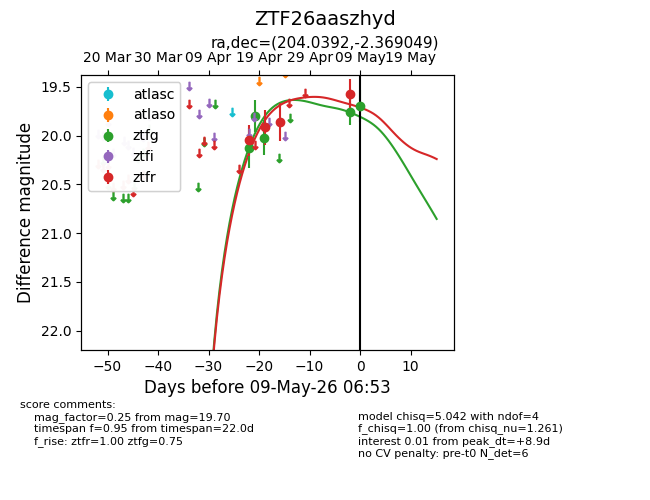
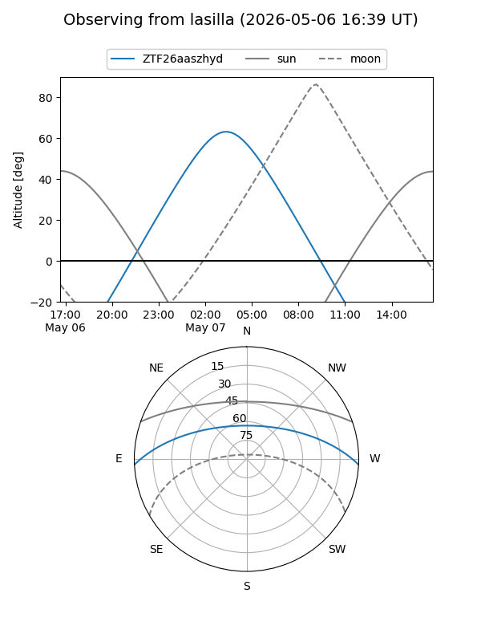
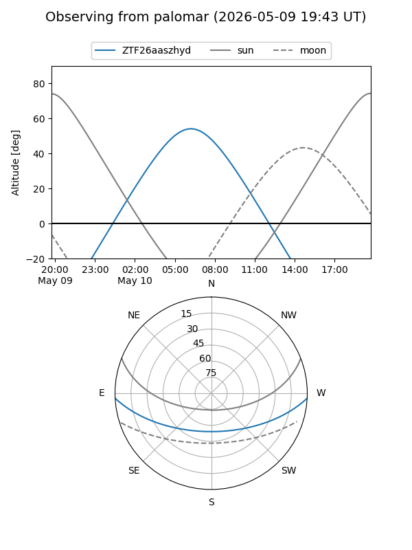
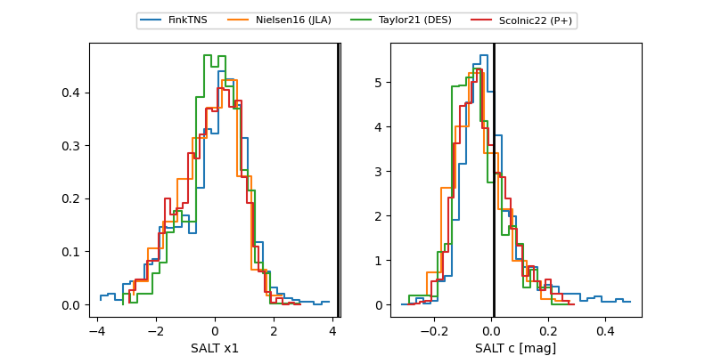

ZTF26aaszhyd
Target ZTF26aaszhyd at 2026-05-09 06:54
Aliases and brokers:
FINK: link
Lasair: link
ALeRCE: link
alt names
ZTF26aaszhyd (ztf,fink_ztf)
Coordinates:
equatorial (ra, dec) = 204.0392,-2.36905
equatorial (HMS+DMS) = 13:36:09.40,-02:22:08.58
galactic (l, b) = (324.7564,+58.59495)
Flags:
Photometry:
last ztfg=19.70, ztfr=19.58
5 ztfg, 4 ztfr detections
Lightcurve

Visibility


Additional plots
